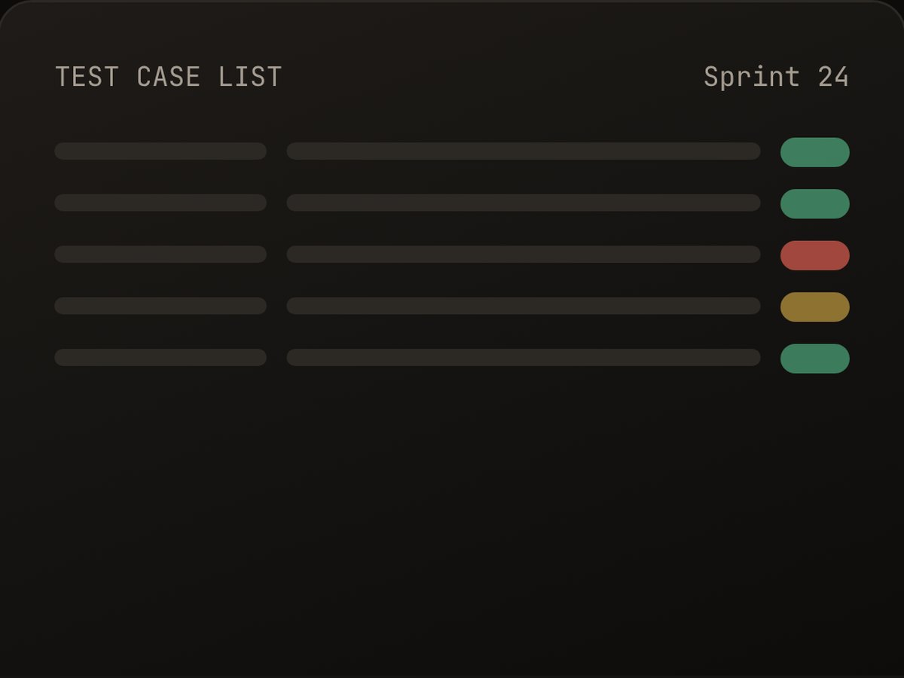
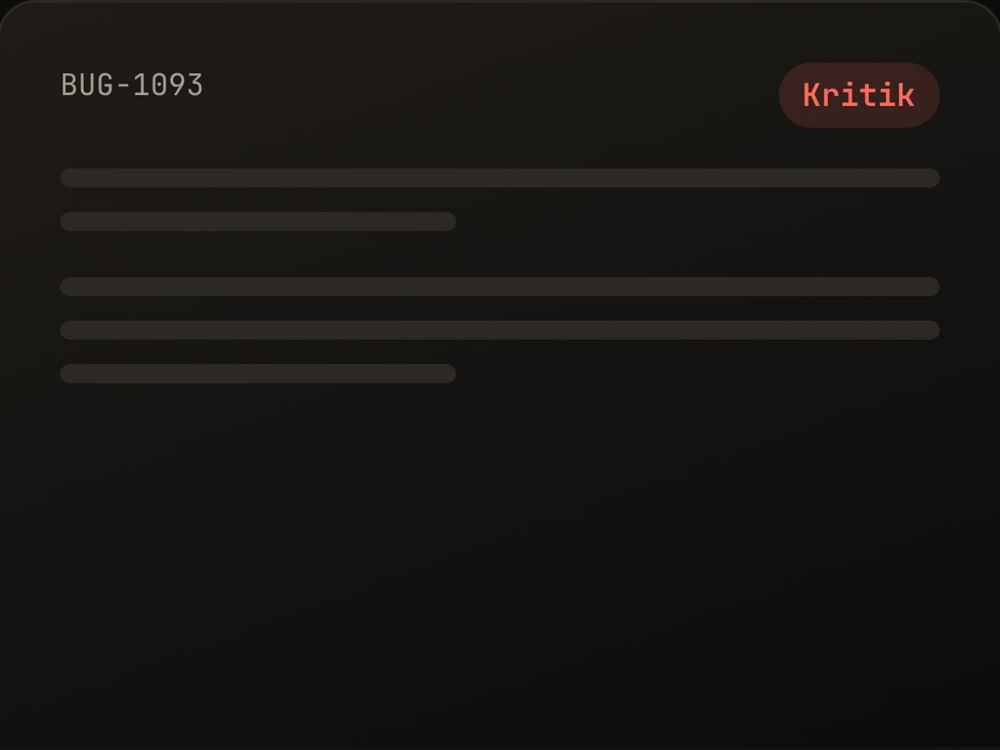
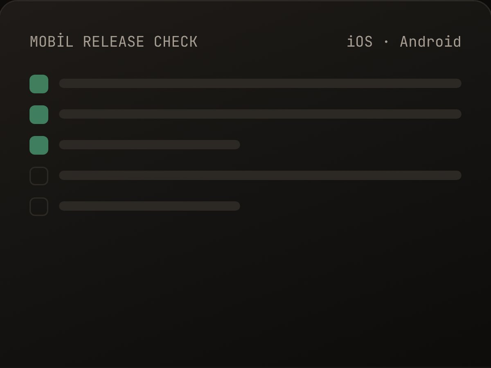
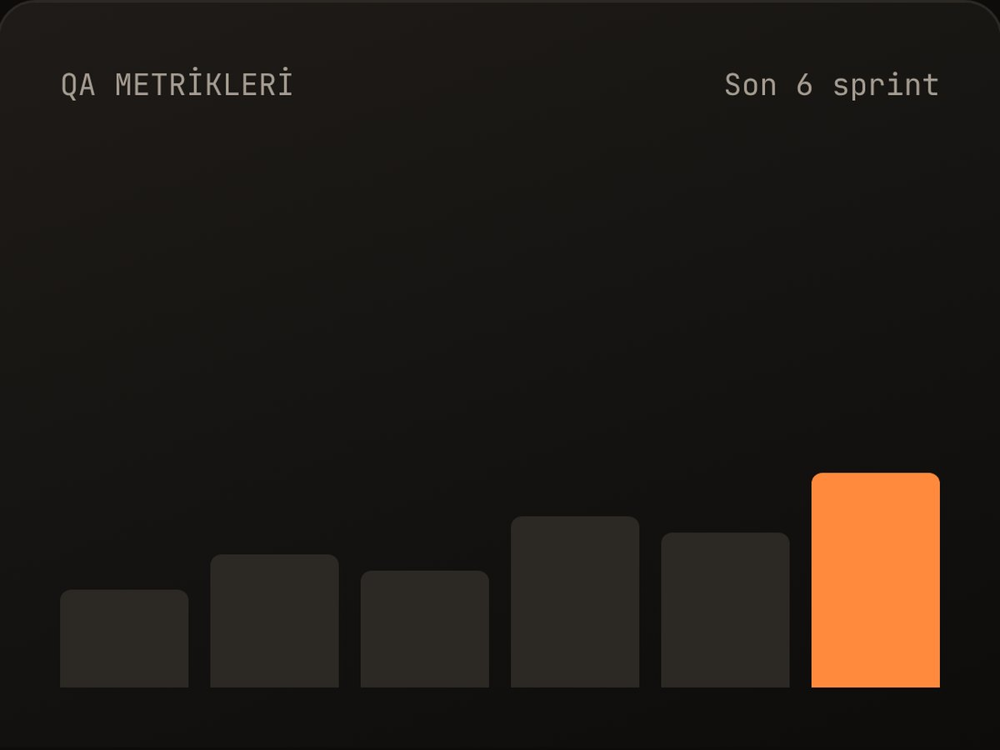
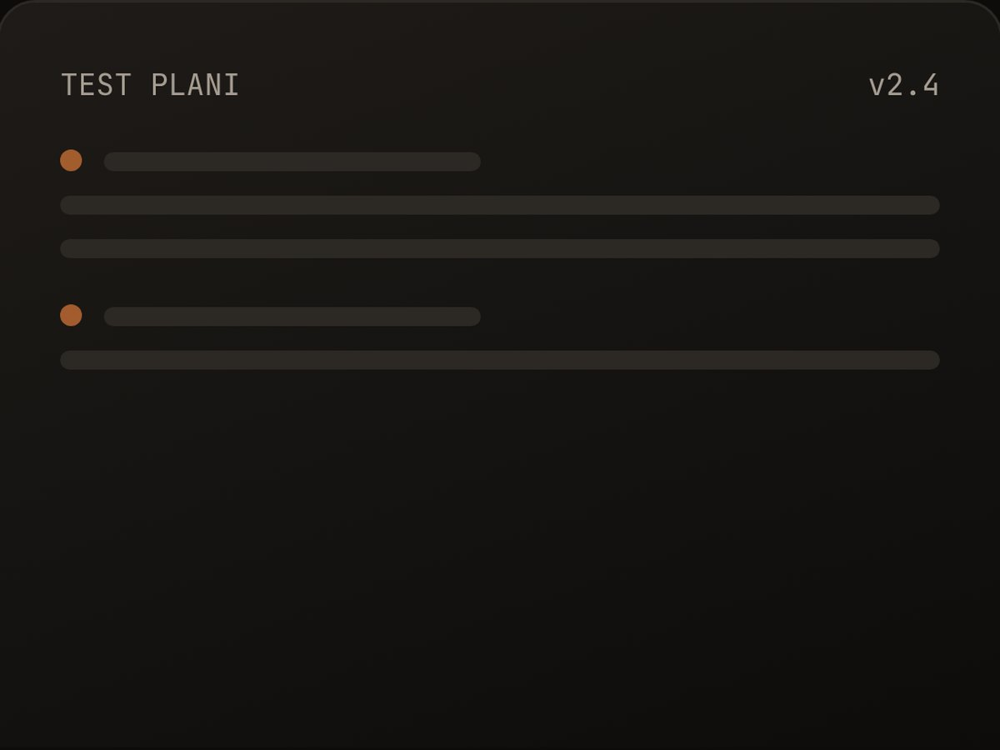
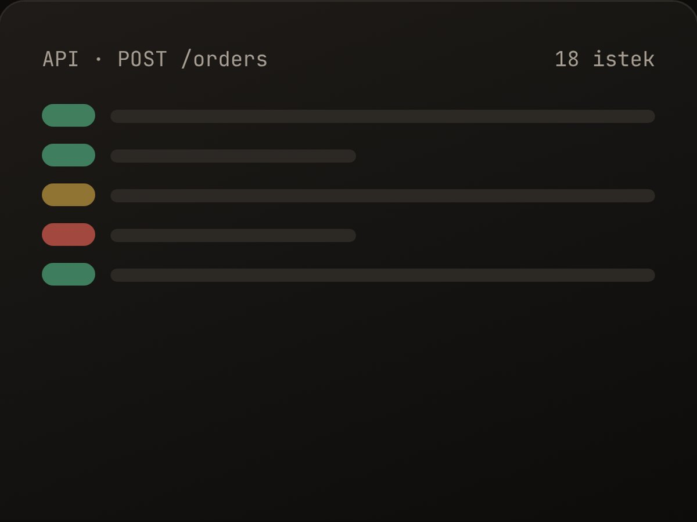

Girdiyi yapıştırın
User story, kabul kriteri, ekran görüntüsü notu ya da sürüm notu. Formatı ne olursa olsun QAcrew okur.
US-482 · "Kullanıcı kayıtlı kartla ödeme yapabilmeli…"
Forge; test senaryosu, bug raporu, smoke checklist ve regresyon seti hazırlamak için QAcrew Studio altında geliştirilen bir çalışma alanıdır. Örnekler ürünü gösterir; hesap, üretim ve ödeme erişimleri henüz etkin değildir.
Ekibinizin sprint ritmini bozmadan, mevcut araçlarınızın içinde çalışır.
User story, kabul kriteri, ekran görüntüsü notu ya da sürüm notu. Formatı ne olursa olsun QAcrew okur.
Test senaryosu, bug raporu ya da checklist. Pozitif, negatif ve sınır değer senaryoları önceliklendirilmiş halde gelir; dilediğinizi düzenleyin.
CSV olarak indirin; Excel veya Google Sheets’te açıp ekibinizle paylaşın.
Hepsi düzenlenebilir, hepsi sahada denenmiş. Mobil uygulamadan API testine kadar.






QAcrew Pulse, Android beta/debug uygulamasındaki test oturumunu arka planda izleyip crash, ANR, yavaşlık ve son adımları kaydetmeyi hedefliyor. Oturum bitince bunları bug raporu ve performans özetine dönüştürecek; canlı sürüm için tasarlanmıyor.
Android test telefonunuzu hazırlayıp beta/debug uygulamasına bağlayacaksınız.
Uygulamayı normal şekilde denerken Pulse oturum verilerini arka planda toplamayı hedefleyecek.
Oturum sonunda bug raporu ve performans özeti hazırlanması planlanıyor.
14:02:11 PaymentActivity açıldı 3.2 sn 14:02:14 POST /payments 1.8 sn · yavaş 14:02:19 CRASH NullPointerException 14:02:19 Son adım: Ödemeyi onayla
Pulse geliştirme sürecini takip etmek ister misiniz?
İlgileniyorum, haber verPaket kapsamı ve aylık ücretler aşağıda listelenmiştir. Hesap, üretim ve ödeme erişimleri henüz etkin değildir; satın alma yapılamaz.
İlk testlerini oluştur. Dağınık notlarını düzenli QA dokümanlarına dönüştür. Kendi işinden bir örnekle dene.
Test hazırlığına daha az zaman ayır. Gereksinimlerden uygulanabilir test senaryoları oluştur; pozitif, negatif ve sınır durumlarını birlikte değerlendir.
Ekibin aynı test düzeninde çalışsın. Test dokümanlarını ortak bir alanda topla; aynı şablonlarla çalışıp hazırlanan testleri birlikte kullanın.
Ortak çalışma ve ekip yönetimi özellikleri hazır olduğunda sunulacak.
Ekibi seçAşağıdaki örnekler ürün önizlemesini anlatır; müşteri yorumu veya gerçek kullanım verisi değildir.
User story ve kabul kriterlerini ön koşulları, adımları ve beklenen sonuçları olan bir test setine dönüştürme.
Dağınık hata bildirimini yeniden üretme adımları ve eksik bilgi sorularıyla yapılandırma.
Değişen modülleri temel alarak gözden geçirilebilir regresyon kapsamı oluşturma.
Burada olmayan bir şey mi var? Bize yazın, bir iş günü içinde dönelim.
Hayır. Bu yayında kullanıcı hesabı ve belge üretim servisi etkin değildir. Giriş ve üretim altyapısı etkinleştirildiğinde erişim bilgileri paylaşılacaktır.
CSV örnek çıktılarda gösterilir. Panelin üretim erişimi henüz etkin değil; PDF ve Jira/Azure DevOps bağlantıları sunulmuyor.
Kişisel şablon kaydetme ve ekiple paylaşma şu anda kullanılamıyor.
Ödeme erişimi henüz etkin değildir; satın alma yapılamaz.
Bir üretim, birden fazla test maddesi içerebilen tek bir dokümandır. Dokümanı görüntülemek, elle düzenlemek veya indirmek üretim hakkı tüketmez.
Standart üretim, günlük işler için odaklı bir taslak hazırlar. Detaylı üretim, daha kapsamlı adımlar ve ek kontrol noktaları sunar. Eksik kaynak bilgileri tahmin edilerek doldurulmaz.
Forge, QAcrew Studio çatısı altında geliştirilen QA dokümantasyon ürünüdür. Hesap, üretim ve ödeme erişimleri henüz etkin değildir.